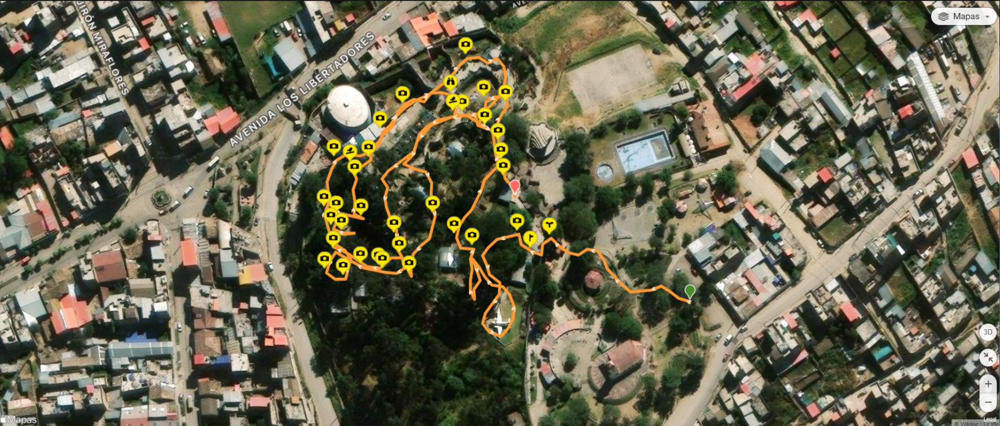

<!doctype html>
<html lang="es"><head><meta charset="utf-8"><meta name="viewport" content="width=device-width,initial-scale=1"><meta name="theme-color" content="#164b32"><title>Zoológico Vivo</title><link rel="manifest" href="manifest.json"><style>
:root{--forest:#164b32;--green:#2f784c;--leaf:#83b858;--cream:#fffaf0;--sand:#f1e8d3;--ink:#193326;--muted:#617268;--line:#e7e1d2;--gold:#e5ab35;--shadow:0 12px 34px #19332617}*{box-sizing:border-box}body{margin:0;background:#f5f7ef;color:var(--ink);font:16px/1.5 system-ui,-apple-system,"Segoe UI",sans-serif}button,input,select,textarea{font:inherit}button{cursor:pointer}.app{min-height:100vh}.top{background:var(--forest);color:white;padding:15px max(20px,calc((100vw - 1160px)/2));display:flex;justify-content:space-between;align-items:center}.brand{display:flex;gap:10px;align-items:center;font-weight:900;font-size:20px}.paw{font-size:25px}.top small{opacity:.78}.layout{max-width:1160px;margin:auto;padding:28px 22px 100px}.hero{background:linear-gradient(115deg,#e6f0d7,#fff7df);border:1px solid #dce9cc;border-radius:26px;padding:32px;display:flex;justify-content:space-between;align-items:center;overflow:hidden;box-shadow:var(--shadow)}h1,h2,h3,p{margin-top:0}h1{font-size:clamp(30px,5vw,48px);line-height:1.05;margin-bottom:12px;color:var(--forest)}h2{font-size:26px;color:var(--forest)}.hero p{color:var(--muted);max-width:600px}.heroart{font-size:100px;filter:drop-shadow(0 8px 8px #3157332c)}.grid{display:grid;grid-template-columns:repeat(3,1fr);gap:16px;margin-top:22px}.card{background:white;border:1px solid var(--line);border-radius:20px;padding:20px;box-shadow:0 6px 18px #1933260a}.card h3{margin-bottom:6px}.muted{color:var(--muted)}.btn{border:0;border-radius:13px;background:var(--forest);color:#fff;padding:12px 18px;font-weight:750;display:inline-flex;gap:8px;align-items:center;justify-content:center}.btn:hover{background:#236241}.btn.light{color:var(--forest);background:#e8f0df}.btn.outline{background:white;color:var(--forest);border:1px solid var(--line)}.btn.gold{background:#d79a21}.row{display:flex;gap:10px;flex-wrap:wrap}.sectionhead{display:flex;justify-content:space-between;align-items:end;margin:28px 0 12px}.animalgrid{display:grid;grid-template-columns:repeat(3,1fr);gap:14px}.animal{border:1px solid var(--line);background:white;border-radius:18px;padding:17px;cursor:pointer;transition:.15s}.animal:hover{transform:translateY(-2px);box-shadow:var(--shadow)}.animal.selected{outline:3px solid var(--leaf)}.animal .emoji{font-size:37px}.animal strong{display:block;font-size:19px}.tag{font-size:12px;color:#587264;background:#eef4e9;border-radius:20px;padding:4px 9px;display:inline-block;margin-top:6px}.route{background:linear-gradient(135deg,#e2efce,#f9f0d9);border:1px solid #dbe7ca;border-radius:24px;min-height:290px;position:relative;overflow:hidden;padding:20px}.route:before{content:"";position:absolute;width:130%;height:70px;left:-10%;top:50%;border:13px solid #d0c6a9;border-left:0;border-right:0;transform:rotate(-12deg);border-radius:50%}.route:after{content:"🌳     🌿         🌳        🌲      🌳";position:absolute;bottom:20px;left:10px;right:10px;font-size:24px;opacity:.7}.pin{position:absolute;z-index:2;font-size:36px}.pin.start{left:14%;top:66%}.pin.end{right:18%;top:23%}.maplabel{position:absolute;z-index:2;background:white;padding:8px 12px;border-radius:12px;font-weight:700;box-shadow:var(--shadow)}.panel{background:white;border:1px solid var(--line);border-radius:20px;padding:23px;margin:16px 0}.form{max-width:520px;margin:32px auto}.field{display:grid;gap:6px;margin:13px 0}.field input,.field select,.field textarea{border:1px solid #d7dfd3;border-radius:12px;padding:12px;background:#fff}.field textarea{min-height:110px}.tabs{position:fixed;bottom:0;left:0;right:0;z-index:4;background:#fffffff2;border-top:1px solid var(--line);display:flex;justify-content:center;gap:6px;padding:9px 12px calc(9px + env(safe-area-inset-bottom));backdrop-filter:blur(10px)}.tabs button{background:none;border:0;color:#587064;padding:7px 14px;border-radius:12px;display:grid;gap:1px;justify-items:center;font-size:12px}.tabs button b{font-size:19px}.tabs button.active{background:#eaf1e2;color:var(--forest);font-weight:800}.score{font-size:38px;font-weight:900;color:var(--forest)}.stars button{font-size:30px;border:0;background:none;color:#c7c9bf}.stars button.on{color:var(--gold)}.notice{border-radius:12px;padding:12px;background:#f2f5ea;color:#40594a}.quizopt{display:block;width:100%;text-align:left;margin:10px 0;padding:13px;border:1px solid var(--line);border-radius:12px;background:white}.quizopt:hover{border-color:var(--green)}.animalhero{display:flex;gap:16px;align-items:center}.animalhero .emoji{font-size:65px}.footer{font-size:12px;color:var(--muted);text-align:center;margin:28px 0}.hidden{display:none!important}@media(max-width:760px){.layout{padding:18px 15px 100px}.hero{padding:23px}.heroart{font-size:70px}.grid{grid-template-columns:1fr}.animalgrid{grid-template-columns:repeat(2,1fr)}.tabs{justify-content:space-around}.tabs button{padding:6px 8px}.top{padding:13px 17px}.top small{display:none}.sectionhead{align-items:start;gap:12px;flex-direction:column}}
.map-panel{padding:14px}.map-viewport{overflow:auto;border:1px solid #bfd3bb;border-radius:17px;background:#e5ecda;overscroll-behavior-x:contain}.satellite-map{position:relative;width:100%;line-height:0}.satellite-map>img{display:block;width:100%;height:auto}.map-markers{position:absolute;inset:0}.map-marker{position:absolute;transform:translate(-50%,-50%);display:grid;place-items:center;width:clamp(30px,3vw,44px);height:clamp(30px,3vw,44px);padding:0;border:2px solid #fff;border-radius:50%;background:#ffcf18;box-shadow:0 2px 8px #1424169c;font-size:clamp(17px,1.7vw,26px);line-height:1;cursor:pointer;transition:transform .15s,box-shadow .15s}.map-marker:hover,.map-marker:focus-visible{z-index:2;transform:translate(-50%,-50%) scale(1.25);box-shadow:0 0 0 4px #fff8,0 4px 12px #142416aa;outline:2px solid #164b32}.map-marker.visited{background:#8dcc5c}.map-caption{display:flex;justify-content:space-between;gap:10px;flex-wrap:wrap;margin:12px 3px;color:#435c4b}.map-caption span{font-size:13px;color:#617268}.map-animal-list{display:flex;gap:8px;flex-wrap:wrap;margin:12px 2px}.map-animal-chip{display:flex;align-items:center;gap:7px;border:1px solid #dce5d6;border-radius:999px;background:#fff;padding:8px 12px;color:#164b32;font-weight:650}.map-animal-chip span{font-size:20px}.map-animal-chip b{color:#278149}.map-disclaimer{font-size:12px;color:#617268;margin:10px 3px 0}@media(max-width:600px){.map-panel{padding:9px}.map-viewport{touch-action:pan-x pan-y pinch-zoom}.satellite-map{min-width:560px}.map-caption{font-size:14px}.map-animal-chip{padding:7px 10px;font-size:14px}}.curiosity-box{background:#fff9e8;border:1px solid #f0d58a;border-radius:16px;padding:16px 18px;margin:18px 0}.curiosity-box h3{margin:0 0 8px;color:#164b32}.curiosity-box ul{margin:0;padding-left:22px}.curiosity-box li{margin:7px 0}.quiz-panel{max-width:720px;margin-inline:auto}.quiz-top{display:flex;justify-content:space-between;align-items:center;gap:10px}.quiz-progress,.level-track{height:10px;background:#e7eddf;border-radius:99px;overflow:hidden;margin:14px 0 22px}.quiz-progress span,.level-track span{display:block;height:100%;background:linear-gradient(90deg,#2f784c,#83b858);border-radius:inherit;transition:width .25s}.quiz-choices{display:grid;gap:10px}.quizopt{display:flex;align-items:center;gap:12px;text-align:left;min-height:54px;margin:0;padding:12px 14px;transition:background .15s,border-color .15s}.quizopt span{display:grid;place-items:center;flex:none;width:30px;height:30px;border-radius:50%;background:#eef4e9;color:#164b32;font-weight:800}.quizopt b{margin-left:auto;color:#236b3c}.quizopt.correct{border-color:#3d9a55;background:#e9f7eb}.quizopt.wrong{border-color:#df786c;background:#fff0ed}.quizopt:disabled{opacity:1;color:var(--ink);cursor:default}.success-note{background:#e9f7eb;color:#164b32}.points-hero{align-items:flex-start}.points-hero .heroart{font-size:72px}.level-track{max-width:480px;margin:12px 0}.points-rule{display:flex;align-items:center;gap:12px;border-bottom:1px solid var(--line);padding:13px 0}.points-rule>span{font-size:24px}.points-rule div{display:grid;flex:1}.points-rule small{color:var(--muted)}.points-rule strong{color:var(--forest)}@media(max-width:600px){.quiz-top{align-items:flex-start;flex-direction:column}.quizopt{min-height:58px}.points-hero .heroart{font-size:50px}.points-rule{gap:8px}.points-rule strong{font-size:14px}}/* Ajustes de pantalla pequeña y formulario */
body{overflow-x:hidden;-webkit-text-size-adjust:100%}.form{width:min(100%,680px)}.form input,.form select{width:100%;min-height:48px}.form input[type=checkbox]{width:20px;min-height:20px}.form [type=submit]{width:100%;min-height:50px}.notice{overflow-wrap:anywhere}
@media(max-width:760px){.layout{width:100%;padding:14px 12px calc(96px + env(safe-area-inset-bottom))}.top{min-height:58px;padding:12px 15px}.brand{font-size:18px}.hero{padding:18px 16px;border-radius:20px;gap:8px}.hero h1{font-size:clamp(27px,8vw,38px)}.heroart{font-size:clamp(48px,14vw,68px)}.form{margin:16px auto;padding:20px 16px;border-radius:20px}.form h2{font-size:24px}.form .field{margin:10px 0}.form .field label{font-size:14px;font-weight:650}.form input,.form select{font-size:16px;min-height:49px;padding:11px 12px}.form [type=submit]{position:sticky;bottom:calc(12px + env(safe-area-inset-bottom));z-index:2;box-shadow:0 5px 14px #164b3230}.grid{gap:12px}.animalgrid{gap:10px}.animal{padding:13px}.route{min-height:250px}.tabs{padding-bottom:calc(9px + env(safe-area-inset-bottom))}}
@media(max-width:380px){.layout{padding-left:10px;padding-right:10px}.form{padding:18px 13px}.tabs button{font-size:11px;padding-inline:5px}}.email-link-btn{width:100%;min-height:48px;margin-top:12px;background:#fff;color:#164b32;border:1px solid #d7dfd3}.email-link-btn:hover{background:#f4f8f1}.email-link-btn:disabled{opacity:.7;cursor:wait}.auth-signup .hero{display:none}.auth-signup .form{margin-top:14px}.auth-signup .form form>.btn[type=submit]{width:100%;min-height:52px}.auth-signup .email-link-btn{min-height:50px}.animal-photo-card{margin:16px 0 20px;border:1px solid var(--line);border-radius:18px;overflow:hidden;background:#eef4e9}.animal-photo{display:none;width:100%;height:clamp(220px,48vw,430px);object-fit:cover;background:#eaf1e6}.animal-photo-fallback{display:grid;place-items:center;min-height:220px;font-size:64px;color:var(--forest)}.animal-photo-credit{padding:9px 12px;font-size:12px;color:var(--muted)}.animal-photo-credit a{color:var(--forest);font-weight:650}@media(max-width:760px){.animal-photo{height:260px}.animal-photo-fallback{min-height:200px}}.quiz-result{width:min(100%,720px);margin:14px auto 24px;padding:clamp(22px,5vw,38px);border:1px solid #dce8cf;border-radius:28px;background:linear-gradient(145deg,#fffdf5 0%,#f1f8e8 100%);box-shadow:0 18px 45px #19332612}.result-top{display:flex;align-items:center;justify-content:space-between}.result-trophy{display:grid;place-items:center;width:68px;height:68px;border-radius:22px;background:#fff3c4;font-size:38px}.quiz-result h1{margin:18px 0 8px;font-size:clamp(30px,7vw,42px);line-height:1.12;color:var(--forest)}.result-lead{margin:0;color:var(--muted);font-size:17px}.result-score-card{display:flex;align-items:center;justify-content:space-between;margin:22px 0;padding:20px 22px;border:1px solid #f1dda5;border-radius:20px;background:#fff;box-shadow:0 7px 20px #5b4a1a10}.result-score-card div{display:grid;gap:2px}.result-label{font-size:12px;font-weight:750;letter-spacing:.08em;color:var(--muted)}.result-score-card strong{font-size:clamp(34px,9vw,48px);line-height:1;color:var(--forest)}.result-score-card small{color:var(--muted)}.result-star{font-size:40px;color:var(--gold)}.result-progress-label{display:flex;justify-content:space-between;margin:18px 0 7px;font-size:14px}.result-progress{height:10px;overflow:hidden;border-radius:99px;background:#e4eadc}.result-progress span{display:block;height:100%;border-radius:inherit;background:linear-gradient(90deg,var(--green),var(--leaf))}.result-actions{display:grid;gap:10px;margin-top:26px}.result-actions .btn{width:100%;min-height:52px;justify-content:center}.result-footnote{margin:14px 0 0;text-align:center;color:var(--muted);font-size:13px}@media(max-width:760px){.quiz-result{margin:8px auto 18px;padding:22px 18px;border-radius:24px}.result-trophy{width:58px;height:58px;font-size:32px}.result-score-card{margin:18px 0;padding:17px}.result-actions{margin-top:22px}}</style></head><body><div id="app"></div><script src="https://cdn.jsdelivr.net/npm/@supabase/supabase-js@2"></script><script src="zv-cloud-config.js"></script><script>
const animals=[{id:'leon',name:'León',emoji:'🦁',group:'Mamífero',habitat:'Sabanas y bosques abiertos',food:'Carnívoro',fact:'Los leones viven en grupos llamados manadas.',q:'¿Cómo se llama el grupo social de los leones?',opts:['Manada','Cardumen','Bandada'],ans:0},{id:'alpaca',name:'Alpaca',emoji:'🦙',group:'Mamífero',habitat:'Altiplano andino',food:'Herbívora',fact:'La alpaca está adaptada a las alturas andinas.',q:'¿En qué región se adapta la alpaca?',opts:['Altiplano andino','Arrecifes','Desierto cálido'],ans:0},{id:'jirafa',name:'Jirafa',emoji:'🦒',group:'Mamífero',habitat:'Sabanas africanas',food:'Herbívora',fact:'La jirafa es el animal terrestre más alto.',q:'¿Qué alimento busca la jirafa en los árboles?',opts:['Hojas','Peces','Semillas bajo tierra'],ans:0},{id:'mono',name:'Mono',emoji:'🐒',group:'Mamífero',habitat:'Bosques tropicales',food:'Frutas y otros alimentos',fact:'Muchas especies de monos usan las manos para sujetar alimento.',q:'¿Qué entorno es hogar de muchas especies de monos?',opts:['Bosques tropicales','Glaciares','Tundra'],ans:0},{id:'oso',name:'Oso de anteojos',emoji:'🐻',group:'Mamífero',habitat:'Bosques andinos',food:'Omnívoro',fact:'Es el único oso nativo de Sudamérica.',q:'¿En qué continente vive el oso de anteojos?',opts:['Sudamérica','Europa','Oceanía'],ans:0},{id:'venado',name:'Venado',emoji:'🦌',group:'Mamífero',habitat:'Bosques y matorrales',food:'Herbívoro',fact:'Los venados tienen sentidos agudos para detectar su entorno.',q:'¿Qué tipo de alimentación tiene el venado?',opts:['Herbívora','Carnívora','Solo insectos'],ans:0},{id:'condor',name:'Cóndor',emoji:'🦅',group:'Ave',habitat:'Montañas y cañones',food:'Carroñera',fact:'El cóndor andino aprovecha corrientes de aire para planear.',q:'¿Qué ayuda al cóndor a planear?',opts:['Corrientes de aire','Aletas','Vida bajo el agua'],ans:0},{id:'zorro',name:'Zorro',emoji:'🦊',group:'Mamífero',habitat:'Diversos ecosistemas',food:'Omnívoro',fact:'Los zorros se adaptan a distintos ambientes.',q:'¿A qué ambientes pueden adaptarse los zorros?',opts:['Diversos ambientes','Solo al océano','Solo al hielo'],ans:0},{id:'buho',name:'Búho',emoji:'🦉',group:'Ave',habitat:'Bosques y zonas arboladas',food:'Carnívoro',fact:'Los búhos tienen una audición muy desarrollada.',q:'¿Qué sentido ayuda mucho al búho a cazar?',opts:['Audición','Gusto','Tacto en las patas'],ans:0},{id:'coati',name:'Coatí',emoji:'🦝',group:'Mamífero',habitat:'Bosques de América',food:'Omnívoro',fact:'El coatí busca alimento con su hocico alargado.',q:'¿Qué usa el coatí para explorar el suelo?',opts:['Su hocico','Sus aletas','Sus cuernos'],ans:0},{id:'halcon',name:'Halcón',emoji:'🦅',group:'Ave',habitat:'Bosques, montañas y campos',food:'Carnívoro',fact:'Los halcones son aves rapaces de vuelo veloz.',q:'¿Qué característica destaca en los halcones?',opts:['Vuelo veloz','Caparazón','Vida acuática'],ans:0},{id:'loro',name:'Loro',emoji:'🦜',group:'Ave',habitat:'Bosques tropicales',food:'Frutas, semillas y brotes',fact:'Los loros tienen un pico fuerte para abrir semillas.',q:'¿Qué les permite abrir semillas?',opts:['Su pico fuerte','Sus pezuñas','Su cola'],ans:0},{id:'perdiz',name:'Perdiz',emoji:'🐦',group:'Ave',habitat:'Matorrales y pastizales',food:'Semillas e insectos',fact:'Las perdices suelen desplazarse por el suelo.',q:'¿Dónde suele desplazarse la perdiz?',opts:['Por el suelo','Bajo el agua','En árboles altos'],ans:0},{id:'perezoso',name:'Perezoso',emoji:'🦥',group:'Mamífero',habitat:'Bosques tropicales',food:'Hojas',fact:'El perezoso se mueve lentamente y pasa mucho tiempo en los árboles.',q:'¿Dónde pasa mucho tiempo el perezoso?',opts:['En los árboles','Bajo el agua','En el hielo'],ans:0},{id:'puma',name:'Puma',emoji:'🐆',group:'Mamífero',habitat:'Montañas, bosques y otros ambientes',food:'Carnívoro',fact:'El puma es un felino americano que se adapta a varios ambientes.',q:'¿En qué continente vive naturalmente el puma?',opts:['América','Oceanía','Antártida'],ans:0},{id:'serpiente',name:'Serpiente',emoji:'🐍',group:'Reptil',habitat:'Diversos ambientes terrestres',food:'Carnívora',fact:'Las serpientes perciben vibraciones del suelo y mudan su piel.',q:'¿Qué hace la serpiente al crecer?',opts:['Muda su piel','Cambia de caparazón','Desarrolla plumas'],ans:0},{id:'tortuga',name:'Tortuga',emoji:'🐢',group:'Reptil',habitat:'Ambientes terrestres o acuáticos según la especie',food:'Variable según la especie',fact:'El caparazón de la tortuga forma parte de su esqueleto.',q:'¿Qué protege a la tortuga?',opts:['Su caparazón','Sus plumas','Su melena'],ans:0},{id:'vicuna',name:'Vicuña',emoji:'🦙',group:'Mamífero',habitat:'Puna altoandina',food:'Pastos altoandinos',fact:'La vicuña está adaptada a las alturas andinas.',q:'¿A qué ambiente está adaptada la vicuña?',opts:['Puna altoandina','Manglar tropical','Arrecife'],ans:0}];
const blank=()=>({users:[],current:null,opinions:[],reports:[],sessions:{}});let db=JSON.parse(localStorage.getItem('zv-db')||'null')||blank();const cloudClient=(window.supabase&&window.ZV_CONFIG&&ZV_CONFIG.supabaseUrl&&ZV_CONFIG.publishableKey)?window.supabase.createClient(ZV_CONFIG.supabaseUrl,ZV_CONFIG.publishableKey):null;let cloudWrite=Promise.resolve();let page='home',selected=null,quizIndex=0,quizCorrect=0,quizAnswered=false,quizSet=null,quizPointsEarned=0,quizChoice=-1,quizLastPoints=0,quizLoading=false,tourSaving=false,cloudQuizReady=false,pointSystemVersion=2,stars=0,flash='';function save(){if(db.current==='__guest__')return;localStorage.setItem('zv-db',JSON.stringify(db))}function user(){return db.current==='__guest__'?db.guest:db.users.find(x=>x.email===db.current)}function stats(){let u=user();if(!u)return{points:0,visits:[],correct:0,answered:0,completed:0,answeredIds:[],tourRewardClaimed:false,pointVersion:pointSystemVersion};u.stats||={points:0,visits:[],correct:0,answered:0,completed:0};u.stats.visits||=[];u.stats.answeredIds||=[];if(u.stats.pointVersion===undefined)u.stats.pointVersion=pointSystemVersion;if(u.stats.tourRewardClaimed===undefined)u.stats.tourRewardClaimed=(u.stats.completed||0)>0;return u.stats}function startGuest(){db.guest={first:'Invitado',last:'',email:'',phone:'',stats:{points:0,visits:[],correct:0,answered:0,completed:0}};db.current='__guest__';page='rules';render()}function acceptRules(){page='home';render()}function acceptRulesIfChecked(){if(document.getElementById('rulesok').checked)acceptRules();else alert('Acepta las normas para continuar.')}function esc(s=''){return String(s).replace(/[&<>"']/g,c=>({'&':'&amp;','<':'&lt;','>':'&gt;','"':'&quot;',"'":'&#39;'}[c]))}function btn(label,action,cls=''){return `<button type="button" class="btn ${cls}" onclick="${action}">${label}</button>`}function go(p){page=p;render()}function nav(){return `<nav class="tabs">${[['home','⌂','Inicio'],['animals','🐾','Animales'],['games','🎮','Juegos'],['points','★','Puntos'],['profile','●','Perfil']].map(([id,ic,n])=>`<button class="${page===id?'active':''}" onclick="go('${id}')"><b>${ic}</b>${n}</button>`).join('')}</nav>`}function shell(content){return `<div class="app"><header class="top"><div class="brand"><span class="paw">🐾</span> Zoológico Vivo</div><small>Explora, aprende y cuida · Cerrito de la Libertad</small></header><main class="layout">${content}<div class="footer">Prototipo educativo · Los datos de animales son ejemplos por validar con el zoológico.</div></main>${db.current?nav():''}</div>`}
const animalPhotoPages={leon:"Lion",alpaca:"Alpaca",jirafa:"Giraffe",mono:"Monkey",oso:"Spectacled bear",venado:"Deer",condor:"Andean condor",zorro:"Fox",buho:"Owl",coati:"Coati",halcon:"Falcon",loro:"Parrot",perdiz:"Partridge",perezoso:"Sloth",puma:"Cougar",serpiente:"Snake",tortuga:"Turtle",vicuna:"Vicuña"};
const animalPhotoCache={};let animalPhotoRequest=0;
async function loadAnimalPhoto(a){
 let image=document.getElementById("animalPhoto"),fallback=document.getElementById("animalPhotoFallback"),credit=document.getElementById("animalPhotoCredit");
 if(!image||!fallback||!credit)return;
 let request=++animalPhotoRequest;fallback.textContent=a.emoji;image.style.display="none";fallback.style.display="grid";credit.textContent="Cargando fotografía real de la especie…";
 try{
  let data=animalPhotoCache[a.id];
  if(!data){
   let title=animalPhotoPages[a.id];if(!title)throw new Error("No hay fuente de imagen");
   let response=await fetch("https://en.wikipedia.org/api/rest_v1/page/summary/"+encodeURIComponent(title));
   if(!response.ok)throw new Error("No se obtuvo la fotografía");
   let summary=await response.json(),photo=summary.thumbnail&&summary.thumbnail.source;if(photo)photo=photo.replace(/^https:\/\/thumb\.wikimedia\.org\//,"https://upload.wikimedia.org/").split("?")[0];
   if(!photo||!/^https:\/\/(thumb\.wikimedia\.org|upload\.wikimedia\.org)\//.test(photo))throw new Error("No hay foto disponible");
   data={photo:photo,page:summary.content_urls?.desktop?.page||"https://en.wikipedia.org/wiki/"+encodeURIComponent(title),artist:"",license:"",licenseUrl:""};
   let imagePath=new URL(summary.originalimage?.source||photo).pathname,filename=decodeURIComponent(imagePath.split("/").pop()).replace(/^\d+px-/i,"");
   if(filename){
    try{
     let params=new URLSearchParams({action:"query",format:"json",prop:"imageinfo",iiprop:"extmetadata",titles:"File:"+filename,origin:"*"});
     let metaResponse=await fetch("https://commons.wikimedia.org/w/api.php?"+params.toString());
     if(metaResponse.ok){
      let metaJson=await metaResponse.json(),file=Object.values(metaJson.query?.pages||{})[0],ext=file?.imageinfo?.[0]?.extmetadata||{};
      let plain=function(value){let node=document.createElement("span");node.innerHTML=value||"";return node.textContent.trim()};
      data.artist=plain(ext.Artist?.value);data.license=plain(ext.LicenseShortName?.value);data.licenseUrl=ext.LicenseUrl?.value||"";
      data.page="https://commons.wikimedia.org/wiki/File:"+encodeURIComponent(filename.replace(/ /g,"_"))
     }
    }catch(_){}
   }
   animalPhotoCache[a.id]=data
  }
  if(request!==animalPhotoRequest||!document.getElementById("animalPhoto"))return;
  image.onload=function(){if(image.isConnected){image.style.display="block";fallback.style.display="none"}};
  image.onerror=function(){if(image.isConnected){image.style.display="none";fallback.style.display="grid";credit.textContent="No se pudo cargar la foto. Revisa tu conexión a internet."}};
  image.style.display="block";fallback.style.display="none";image.src=data.photo;
  credit.textContent=(data.artist?"Foto: "+data.artist:"Fotografía referencial de la especie")+(data.license?" · Licencia: "+data.license:"")+" · ";
  let source=document.createElement("a");source.href=data.page;source.target="_blank";source.rel="noopener noreferrer";source.textContent="Fuente Wikimedia";credit.appendChild(source);
  if(data.licenseUrl&&/^https:\/\//.test(data.licenseUrl)){credit.appendChild(document.createTextNode(" · "));let license=document.createElement("a");license.href=data.licenseUrl;license.target="_blank";license.rel="noopener noreferrer";license.textContent="Ver licencia";credit.appendChild(license)}
 }catch(error){if(request!==animalPhotoRequest)return;fallback.style.display="grid";image.style.display="none";credit.textContent="Foto no disponible ahora. Se muestra el ícono del animal; revisa tu conexión.";console.warn("No se cargó la foto",a.id,error)}
}function render(){if(!db.current)return renderAuth();let u=user();document.getElementById('app').innerHTML=shell(pageContent(u));if(page==='info'||page==='observe')loadAnimalPhoto(selected||animals[0])}function renderAuth(){document.getElementById('app').innerHTML=`<header class="top"><div class="brand"><span class="paw">🐾</span> Zoológico Vivo</div><small>Explora, aprende y cuida</small></header><main class="layout ${page==='signup'?'auth-signup':'auth-login'}"><section class="hero"><div><p class="tag">BIENESTAR ANIMAL · APRENDE · PARTICIPA</p><h1>Una aventura<br>para aprender.</h1><p>Explora el zoológico, descubre animales y guarda tu progreso.</p></div><div class="heroart">🦁</div></section><section class="panel form"><h2>${page==='signup'?'Crear cuenta':'¡Bienvenido!'}</h2><p class="muted">${page==='signup'?'Crea tu perfil para guardar puntos y recorridos.':'Inicia sesión para continuar tu recorrido.'}</p><form onsubmit="auth(event,'${page==='signup'?'signup':'login'}')">${page==='signup'?`<div class="field"><label>Nombres</label><input name="first" required></div><div class="field"><label>Apellidos</label><input name="last" required></div><div class="field"><label>Celular</label><input name="phone" type="tel" required></div><div class="field"><label>Procedencia</label><select name="origin" required><option value="">Selecciona…</option><option>Huancayo</option><option>Otra provincia de Junín</option><option>Otra región del Perú</option><option>Extranjero</option></select></div><div class="field"><label>Distrito o país (opcional)</label><input name="location_detail"></div><div class="field"><label>Rango de edad (opcional)</label><select name="age_range"><option value="">Prefiero no indicar</option><option>Niño</option><option>Adolescente</option><option>Adulto</option><option>Adulto mayor</option></select></div><div class="field"><label>¿Cómo te enteraste? (opcional)</label><select name="referral_source"><option value="">Selecciona…</option><option>Redes sociales</option><option>Familiares o amigos</option><option>Colegio</option><option>Paso por la zona</option><option>Otro</option></select></div>`:''}<div class="field"><label>Correo electrónico</label><input name="email" type="email" inputmode="email" autocomplete="email" placeholder="nombre@correo.com" required></div><div class="field"><label>Contraseña</label><input name="password" type="password" minlength="6" required></div><div class="field"><label>Confirmar contraseña</label><input name="password2" type="password" minlength="6" required></div>${page==='signup'?`<label><input type="checkbox" required> Acepto los <a href="#" onclick="go('terms')">Términos</a> y la política de privacidad.</label>`:''}<div style="margin-top:16px"><button class="btn" type="submit">${page==='signup'?'Crear cuenta':'Iniciar sesión'}</button></div></form><button type="button" class="btn email-link-btn" onclick="sendEmailLink()"><span aria-hidden="true">✉</span><span>${page==="signup"?"Crear cuenta con enlace por correo":"Recibir enlace de acceso por correo"}</span></button>${flash?`<p class="notice">${esc(flash)}</p>`:''}<p style="margin-top:20px">${page==='signup'?'¿Ya tienes cuenta?':'¿Nuevo por aquí?'} <a href="#" onclick="go('${page==='signup'?'login':'signup'}')">${page==='signup'?'Inicia sesión':'Crear cuenta'}</a></p><button class="btn outline" onclick="go('terms')">Términos y privacidad</button> ${btn('Entrar como invitado','startGuest()','light')}</section></main>`}async function sendEmailLink(){const mode=page==='signup'?'signup':'login';if(!cloudClient){flash='No está configurada la conexión con Supabase.';return renderAuth()}if(location.protocol==='file:'){flash='Abre la aplicación desde su dirección web publicada (HTTPS) para recibir el enlace.';return renderAuth()}const form=document.querySelector('.form form');if(!form||!form.reportValidity())return;const f=Object.fromEntries(new FormData(form)),email=(f.email||'').trim().toLowerCase();if(!email){flash='Escribe tu correo electrónico.';return renderAuth()}const button=document.querySelector('.email-link-btn');if(button){button.disabled=true;button.textContent='Enviando enlace…'}try{const options={emailRedirectTo:window.location.origin+window.location.pathname,shouldCreateUser:mode==='signup'};if(mode==='signup')options.data={display_name:(f.first+' '+f.last).trim(),first:f.first,last:f.last,phone:f.phone?.trim()||null,origin:f.origin||null,location_detail:f.location_detail?.trim()||null,age_range:f.age_range||null,referral_source:f.referral_source||null};const{error}=await cloudClient.auth.signInWithOtp({email,options});if(error){flash=authErrorMessage(error,mode);return renderAuth()}flash='Te enviamos un enlace de acceso. Revisa tu correo y también la carpeta de spam.';renderAuth()}catch(error){console.error('Error enviando enlace:',error);flash=authErrorMessage(error,mode);renderAuth()}}function authErrorMessage(error,mode){const m=(error?.message||'').toLowerCase();if(m.includes('already registered')||m.includes('already been registered'))return 'Ese correo ya tiene una cuenta. Inicia sesión o usa otro correo.';if(m.includes('invalid email'))return 'Escribe un correo electrónico válido.';if(m.includes('password')&&(m.includes('characters')||m.includes('length')||m.includes('short')))return 'La contraseña no cumple el mínimo requerido. Usa al menos 6 caracteres.';if(m.includes('rate limit')||m.includes('too many'))return 'Se hicieron muchos intentos. Espera unos minutos y vuelve a probar.';if(m.includes('email not confirmed'))return 'Confirma tu correo desde el enlace enviado antes de iniciar sesión.';if(m.includes('invalid login credentials'))return 'Correo o contraseña incorrectos. Si acabas de registrarte, confirma primero tu correo.';if(m.includes('database error saving new user')||m.includes('check constraint'))return 'La base rechazó un dato opcional del registro. Ya corregimos ese envío; vuelve a intentarlo.';if(m.includes('fetch')||m.includes('network'))return location.protocol==='file:'?'Abre la app desde su dirección web publicada (HTTPS); el archivo local no puede conectarse a Supabase.':'No se pudo conectar con Supabase. Verifica la conexión y que esté publicada la configuración actualizada.';return mode==='signup'?'No se pudo crear la cuenta. '+(error?.message||'Revisa los datos e inténtalo otra vez.'):'No se pudo iniciar sesión. '+(error?.message||'Revisa tus datos.')}
async function auth(e,mode){e.preventDefault();const form=e.currentTarget,submit=form.querySelector('[type="submit"]');submit.disabled=true;submit.textContent=mode==='signup'?'Creando cuenta…':'Ingresando…';try{let f=Object.fromEntries(new FormData(form));let email=(f.email||'').trim().toLowerCase();if(mode==='signup'){if(f.password!==f.password2){flash='Las contraseñas no coinciden.';return renderAuth()}if(!/^[^\s@]+@[^\s@]+\.[^\s@]+$/.test(email)){flash='Escribe un correo electrónico válido.';return renderAuth()}}if(cloudClient){let result;if(mode==='signup'){result=await cloudClient.auth.signUp({email,password:f.password,options:{data:{display_name:(f.first+' '+f.last).trim(),first:f.first,last:f.last,phone:f.phone?.trim()||null,origin:f.origin||null,location_detail:f.location_detail?.trim()||null,age_range:f.age_range||null,referral_source:f.referral_source||null},emailRedirectTo:window.location.origin+window.location.pathname}})}else{if(!email.includes('@')){flash='Inicia sesión con el correo electrónico que registraste.';return renderAuth()}result=await cloudClient.auth.signInWithPassword({email,password:f.password})}if(result.error){flash=authErrorMessage(result.error,mode);return renderAuth()}const remoteUser=result.data.user;if(!result.data.session){flash='Tu cuenta fue creada. Revisa tu correo y abre el enlace de confirmación; después vuelve aquí para iniciar sesión.';return renderAuth()}const display=(remoteUser.user_metadata?.display_name||[f.first,f.last].filter(Boolean).join(' ')||email.split('@')[0]);const profile=await cloudClient.from('visitantes').upsert({user_id:remoteUser.id,display_name:display,first_name:f.first||remoteUser.user_metadata?.first,last_name:f.last||remoteUser.user_metadata?.last,email:remoteUser.email,phone:f.phone||remoteUser.user_metadata?.phone,origin:f.origin||remoteUser.user_metadata?.origin,location_detail:f.location_detail||remoteUser.user_metadata?.location_detail,age_range:f.age_range||remoteUser.user_metadata?.age_range,referral_source:f.referral_source||remoteUser.user_metadata?.referral_source},{onConflict:'user_id'});if(profile.error)console.error('No se pudo guardar el perfil:',profile.error.message);db.current=remoteUser.email||email;db.cloudUserId=remoteUser.id;let pr=await cloudClient.from('progreso_visitantes').select('*').eq('user_id',remoteUser.id).maybeSingle();if(pr.data){db.users=db.users.filter(x=>x.email!==email);db.users.push({first:remoteUser.user_metadata?.first||display.split(' ')[0],last:remoteUser.user_metadata?.last||'',phone:remoteUser.user_metadata?.phone||'',email:remoteUser.email||email,origin:remoteUser.user_metadata?.origin,location_detail:remoteUser.user_metadata?.location_detail,age_range:remoteUser.user_metadata?.age_range,stats:{points:pr.data.points||0,visits:pr.data.visited_animals||[],correct:pr.data.correct_answers||0,answered:pr.data.answered_questions||0,completed:pr.data.completed_tours||0,tourRewardClaimed:pr.data.tour_reward_claimed||false}})}else{db.users.push({first:f.first||display,last:f.last||'',phone:remoteUser.user_metadata?.phone||'',email:remoteUser.email||email,origin:remoteUser.user_metadata?.origin,location_detail:remoteUser.user_metadata?.location_detail,age_range:remoteUser.user_metadata?.age_range,stats:{points:0,visits:[],correct:0,answered:0,completed:0}})}page=mode==='signup'?'rules':'home';flash='';save();render();return}if(mode==='signup'){if(db.users.some(x=>x.email===email)){flash='Ya existe una cuenta con ese correo.';return renderAuth()}db.users.push({first:f.first,last:f.last,phone:f.phone,email,origin:f.origin,location_detail:f.location_detail,age_range:f.age_range,referral_source:f.referral_source,password:f.password,stats:{points:0,visits:[],correct:0,answered:0,completed:0}});db.current=email;save();page='rules'}else{let u=db.users.find(x=>(x.email===email||x.phone===email)&&x.password===f.password);if(!u){flash='Correo o contraseña incorrectos.';return renderAuth()}db.current=email;save();page='home'}flash='';render()}catch(err){console.error('Error en autenticación:',err);flash=authErrorMessage(err,mode);renderAuth()}finally{const current=document.querySelector('.form [type="submit"]');if(current){current.disabled=false;current.textContent=page==='signup'?'Crear cuenta':'Iniciar sesión'}}}function pageContent(u){let s=stats();if(page==='rules')return `<h1>Antes de empezar, cuidemos a los animales</h1><section class="panel"><div class="grid"><article class="card"><h3>🚫 No alimentar</h3><p>Los animales reciben una dieta preparada por su equipo cuidador.</p></article><article class="card"><h3>🐾 No molestar</h3><p>No golpees ni te acerques a los recintos.</p></article><article class="card"><h3>🤫 Evita ruidos fuertes</h3><p>Habla bajo y ayuda a mantener un ambiente tranquilo.</p></article><article class="card"><h3>♻️ Cuida el entorno</h3><p>Deposita la basura en los tachos.</p></article></div><label><input type="checkbox" id="rulesok"> Me comprometo a cumplir las normas</label><p>${btn('Entendido, ¡empezar!',"acceptRulesIfChecked()")}</p></section>`;if(page==='home')return `<section class="hero"><div><p class="tag">¡HOLA, ${esc(u.first.toUpperCase())}!</p><h1>Tu aventura<br>comienza aquí.</h1><p>Explora, aprende sobre los animales y suma puntos en cada visita.</p><div class="row">${btn('🗺️ Comenzar recorrido',"go('animals')")} ${btn('🐾 Ver animales',"go('animals')",'light')}</div></div><div class="heroart">🦁</div></section><div class="grid"><div class="card"><div class="score">${s.points} ★</div><span class="muted">Puntos acumulados</span></div><div class="card"><div class="score">${s.visits.length}</div><span class="muted">Animales visitados</span></div><div class="card"><div class="score">${s.correct}</div><span class="muted">Respuestas correctas</span></div></div><div class="sectionhead"><h2>¿Qué te gustaría hacer?</h2></div><div class="grid"><div class="card"><h3>🦒 Descubre animales</h3><p class="muted">Conoce especies y datos educativos.</p>${btn('Explorar',"go('animals')",'light')}</div><div class="card"><h3>🎮 Pon a prueba lo que sabes</h3><p class="muted">Responde preguntas y gana puntos.</p>${btn('Jugar',"go('games')",'light')}</div><div class="card"><h3>💬 Comparte tu opinión</h3><p class="muted">Ayúdanos a mejorar tu experiencia.</p>${btn('Opinar',"go('opinion')",'light')}</div></div>`;
if(page==='animals')return `<h1>Croquis interactivo</h1><p class="muted">Toca un marcador o el nombre de un animal para ver su recinto y comenzar la ruta.</p><section class="panel map-panel"><div class="map-viewport"><div class="satellite-map"><div class="map-markers">${animals.map(a=>{let p={leon:[51.5,43],alpaca:[33,46],jirafa:[69,68],mono:[43,47],oso:[37,59],venado:[46,51],condor:[40,22],zorro:[51,21],buho:[47,10],coati:[39.5,34],halcon:[50,11],loro:[35,55],perdiz:[34,61],perezoso:[43,57],puma:[46,24],serpiente:[55,53],tortuga:[56,56],vicuna:[55,61]}[a.id];return `<button class="map-marker ${s.visits.includes(a.id)?'visited':''}" style="left:${p[0]}%;top:${p[1]}%" aria-label="Ver recinto de ${esc(a.name)}" title="${esc(a.name)}" onclick="selectAnimal('${a.id}')">${a.emoji}</button>`}).join('')}</div></div></div><div class="map-caption"><b>📍 Mapa del zoológico</b><span>Marcadores interactivos · Toca uno para iniciar la ruta</span></div><div class="map-animal-list">${animals.map(a=>`<button class="map-animal-chip" onclick="selectAnimal('${a.id}')"><span>${a.emoji}</span>${esc(a.name)}${s.visits.includes(a.id)?'<b aria-label="Visitado">✓</b>':''}</button>`).join('')}</div><p class="map-disclaimer">Los marcadores están ubicados de forma aproximada sobre el mapa compartido. La ubicación exacta de cada recinto debe confirmarse en el zoológico.</p></section>`;if(page==='route'){let a=selected||animals[0];return `<h1>Ruta al recinto</h1><section class="panel"><h2>${a.emoji} Cómo llegar a ${a.name}</h2><p>Sigue la ruta marcada hasta llegar al recinto.</p><div class="route"><span class="pin start">📍</span><span class="pin end">${a.emoji}</span><span class="maplabel" style="left:7%;top:78%">Estás aquí</span><span class="maplabel" style="right:5%;top:10%">${a.name}</span></div><p class="notice">Ruta ilustrativa. Confirma la orientación en la señalética del zoológico.</p>${btn('Ver información del animal',"go('info')")} ${btn('Volver al mapa',"go('animals')",'outline')}</section>`}
if(page==='info'||page==='observe'){let a=selected||animals[0],items=(a.curiosities||[a.fact]).map(x=>'<li>'+esc(x)+'</li>').join('');return '<h1>'+ (page==='info'?'Conoce al animal':'Momento de observar') +'</h1><section class="panel"><div class="animalhero"><span class="emoji">'+a.emoji+'</span><div><h2>'+esc(a.name)+'</h2><span class="tag">'+esc(a.group)+'</span><span class="tag">Ficha educativa general</span></div></div><div class="animal-photo-card"><div class="animal-photo-fallback" id="animalPhotoFallback">'+a.emoji+'</div><div class="animal-photo-credit" id="animalPhotoCredit">Cargando fotografía de referencia de la especie…</div></div><div class="grid"><div><b>Nombre del ejemplar</b><p class="muted">Información no disponible</p></div><div><b>Edad, procedencia e historia</b><p class="muted">Pendiente de actualización oficial</p></div><div><b>Foto de especie</b><p class="muted">La imagen es referencial; no identifica al ejemplar del zoológico.</p></div></div><h3>Sobre la especie</h3><p>'+esc(a.fact)+'</p><p><b>Alimentación:</b> '+esc(a.food)+' · <b>Hábitat general:</b> '+esc(a.habitat)+'</p><section class="curiosity-box"><h3>💡 Datos curiosos</h3><ul>'+items+'</ul></section><p class="notice">Los datos son generales: la especie exacta y la información del ejemplar deben confirmarse con el zoológico.</p>'+ (page==='info'?btn('🎮 Responder preguntas y ganar puntos','startQuiz()'):btn('Ya lo observé → Comenzar quiz','startQuiz()'))+'</section>'}if(page==='quiz'){let a=selected||animals[0],qDone=quizAnswered,qs=quizSet||quizQuestions(a),q=qs[quizIndex];if(quizLoading)return '<h1>Trivia: '+esc(a.name)+'</h1><section class="panel"><p class="notice">Cargando preguntas y progreso…</p></section>';if(!q)return '<h1>Trivia: '+esc(a.name)+'</h1><section class="panel"><p class="notice">'+esc(flash||'No hay preguntas disponibles para este animal.')+'</p>'+btn('Volver al mapa',"go('animals')",'outline')+'</section>';let pct=Math.round((quizIndex+(qDone?1:0))/qs.length*100),choices=q.opts.map(function(o,i){let cls=qDone&&i===quizChoice?(quizWasCorrect?'correct':'wrong'):qDone&&i===q.ans?'correct':'';return '<button class="quizopt '+cls+'" '+(qDone?'disabled':'')+' onclick="answer('+i+')"><span>'+String.fromCharCode(65+i)+'</span>'+esc(o)+(qDone&&i===q.ans?'<b>✓</b>':'')+'</button>'}).join('');return '<h1>Trivia: '+esc(a.name)+'</h1><p class="muted">Aprende jugando · cada acierto suma puntos</p>'+(flash?'<p class="notice">'+esc(flash)+'</p>':'')+'<section class="panel quiz-panel"><div class="quiz-top"><span class="tag">PREGUNTA '+(quizIndex+1)+' DE '+qs.length+'</span><b>⭐ '+quizPointsEarned+' pts ganados</b></div><div class="quiz-progress"><span style="width:'+pct+'%"></span></div><h2>'+esc(q.q)+'</h2><div class="quiz-choices">'+choices+'</div>'+(qDone?'<p class="notice '+(quizWasCorrect&&!quizDuplicate?'success-note':'')+'">'+(quizDuplicate?'Ya respondiste esta pregunta antes; no vuelve a sumar puntos.':quizWasCorrect?'¡Correcto! +'+quizLastPoints+' puntos.':'La respuesta correcta era: '+esc(q.opts[q.ans])+'.')+' '+esc(q.fact)+'</p>'+btn(quizIndex===qs.length-1?'Ver resultado':'Siguiente pregunta →','nextQuestion()'):'<p class="muted">Puntos de esta trivia: '+quizPointsEarned+'</p>')+'</section>'}if(page==='quizresult'){let total=(quizSet||[]).length,percent=total?Math.round(quizCorrect/total*100):0;return `<section class="quiz-result"><div class="result-top"><span class="tag">RESULTADO DEL QUIZ</span><span class="result-trophy" aria-hidden="true">🏆</span></div><h1>${quizCorrect===total&&total?'¡Excelente recorrido!':quizCorrect?'¡Buen trabajo!':'¡Gracias por jugar!'}</h1><p class="result-lead">${quizCorrect} de ${total} respuestas correctas. ${quizCorrect===total&&total?'¡Dominaste esta trivia!':'Cada respuesta te ayuda a aprender más sobre los animales.'}</p><div class="result-score-card"><div><span class="result-label">PUNTOS GANADOS</span><strong>+${quizPointsEarned}</strong><small>puntos en esta visita</small></div><span class="result-star">★</span></div><div class="result-progress-label"><span>Tu resultado</span><b>${percent}%</b></div><div class="result-progress"><span style="width:${percent}%"></span></div><div class="result-actions">${btn('Continuar explorando →',"go('animals')")}${btn('Finalizar recorrido','completeTour()','gold')}${db.current==='__guest__'?btn('Crear cuenta para guardar mis puntos',"go('signup')",'light'):''}</div><p class="result-footnote">${db.current==='__guest__'?'Crea una cuenta para guardar tu puntaje en todos tus dispositivos.':'Tus puntos y respuestas se guardan en tu cuenta.'}</p></section>`}if(page==='games')return `<h1>Juegos educativos</h1><p class="muted">Elige un animal y completa su pregunta.</p><div class="animalgrid">${animals.map(a=>`<div class="animal" onclick="selected=animals.find(x=>x.id==='${a.id}');startQuiz()"><span class="emoji">${a.emoji}</span><strong>Trivia del ${a.name}</strong><span class="tag">5 preguntas · hasta 50 pts</span></div>`).join('')}</div>`;
if(page==='points'){let level=s.points>=300?{name:'Embajador de la fauna',emoji:'🏆',floor:300,next:null}:s.points>=150?{name:'Guardián de la fauna',emoji:'🛡️',floor:150,next:300}:s.points>=50?{name:'Explorador experto',emoji:'🧭',floor:50,next:150}:{name:'Explorador inicial',emoji:'🌱',floor:0,next:50};let pct=level.next?Math.min(100,Math.round((s.points-level.floor)/(level.next-level.floor)*100)):100;return '<h1>Mis puntos</h1><section class="hero points-hero"><div><p class="tag">TU PROGRESO</p><div class="score">'+s.points+' ★</div><p>Puntos guardados en tu cuenta</p><strong>'+level.emoji+' '+level.name+'</strong>'+(level.next?'<p class="muted">Te faltan '+Math.max(0,level.next-s.points)+' puntos para el siguiente nivel.</p>':'<p class="muted">¡Llegaste al nivel más alto!</p>')+'<div class="level-track"><span style="width:'+pct+'%"></span></div></div><div class="heroart">🏆</div></section><div class="grid"><div class="card"><h3>🐾 Recintos visitados</h3><div class="score">'+s.visits.length+'</div></div><div class="card"><h3>✅ Respuestas correctas</h3><div class="score">'+s.correct+'</div></div><div class="card"><h3>❔ Preguntas respondidas</h3><div class="score">'+s.answered+'</div></div></div><section class="panel"><h2>Cómo ganar puntos</h2><div class="points-rule"><span>🐾</span><div><b>Visita un recinto</b><small>Una vez por animal</small></div><strong>+'+(s.pointVersion===1?1:25)+' pts</strong></div><div class="points-rule"><span>🧠</span><div><b>Responde bien una pregunta</b><small>Cada pregunta suma una vez</small></div><strong>+'+(s.pointVersion===1?1:10)+' pts</strong></div>'+ (s.pointVersion===1?'':'<div class="points-rule"><span>🏁</span><div><b>Completa tu primer recorrido</b><small>Bono único por cuenta</small></div><strong>+25 pts</strong></div>') +'<p class="notice">Puedes repetir las preguntas para aprender, pero no vuelven a sumar puntos. Los puntos se guardan '+(db.current==='__guest__'?'solo durante esta sesión de invitado.':cloudClient?'en Supabase, asociados a tu cuenta.':'en este dispositivo.')+'</p></section>'}if(page==='profile')return `<h1>Mi perfil</h1><section class="panel"><h2>${esc(u.first)} ${esc(u.last)}</h2><p>${esc(u.email)} · ${esc(u.phone)}</p><p class="score">${s.points} ★ <span class="muted" style="font-size:16px">puntos</span></p><div class="row">${btn('Editar perfil',"go('edit')",'light')} ${btn('Términos y privacidad',"go('terms')",'outline')} ${btn('Cerrar sesión',"logout()",'outline')}</div></section><section class="panel"><h3>Tu actividad</h3><p>${s.visits.length} animales · ${s.answered} preguntas · ${s.correct} aciertos</p><p>Visitados: ${s.visits.map(id=>animals.find(a=>a.id===id)?.name).filter(Boolean).join(', ')||'Aún no hay visitas.'}</p></section><div class="grid"><div class="card" onclick="go('opinion')"><h3>💬 Enviar opinión</h3><p>Cuéntanos cómo te fue.</p></div><div class="card" onclick="go('report')"><h3>🚨 Reportar un problema</h3><p>Mapa, ruta, puntos o información.</p></div><div class="card" onclick="go('contact')"><h3>🏛️ Contacto municipal</h3><p>Canales independientes oficiales.</p></div></div>`;
if(page==='edit')return `<h1>Editar perfil</h1><form class="panel" onsubmit="editProfile(event)"><div class="field"><label>Nombres</label><input name="first" value="${esc(u.first)}" required></div><div class="field"><label>Apellidos</label><input name="last" value="${esc(u.last)}" required></div><div class="field"><label>Celular</label><input name="phone" value="${esc(u.phone)}"></div>${btn('Guardar cambios',"this.form.requestSubmit()")}</form>`;
if(page==='opinion')return `<h1>Tu opinión cuenta</h1><section class="panel"><p>¿Cómo calificarías tu experiencia?</p><div class="stars">${[1,2,3,4,5].map(n=>`<button class="${stars>=n?'on':''}" onclick="stars=${n};render()">★</button>`).join('')}</div><div class="field"><label>Comentarios o sugerencias</label><textarea id="optext" placeholder="Escribe aquí..."></textarea></div>${btn('Enviar opinión',"sendOpinion()")}${flash?`<p class="notice">${esc(flash)}</p>`:''}</section>`;
if(page==='report')return `<h1>Reportar un problema</h1><section class="panel"><p>Describe un problema de la aplicación o una situación observada durante la visita.</p><div class="field"><label>Categoría</label><select id="rtype"><option>Problema con la aplicación</option><option>Error en mapa</option><option>Problema con ruta</option><option>Puntos no registrados</option><option>Información incorrecta</option><option>Situación observada</option><option>Otro</option></select></div><div class="field"><label>Animal o lugar</label><input id="rplace"></div><div class="field"><label>Descripción</label><textarea id="rdesc" required></textarea></div><div class="field"><label>Fotografía opcional</label><input id="rphoto" type="file" accept="image/*"></div><p class="notice">Este reporte no reemplaza un reclamo o denuncia oficial.</p>${btn('Enviar reporte',"sendReport()")}${flash?`<p class="notice">${esc(flash)}</p>`:''}</section>`;
if(page==='contact')return `<h1>Contacto y reclamos</h1><p class="muted">Sección independiente para contactar canales municipales. Verifica números y enlaces antes de publicar.</p><div class="grid"><div class="card"><h3>🐾 Zoológico Municipal</h3><p>(064) 365843</p><a href="tel:+5164365843">Llamar</a></div><div class="card"><h3>🏛️ Municipalidad Provincial de Huancayo</h3><p>(064) 600-408</p><a href="tel:+5164600408">Llamar</a></div><div class="card"><h3>Libro de reclamaciones</h3><p>Consulta los canales oficiales municipales.</p><a href="https://www.munihuancayo.gob.pe/" target="_blank" rel="noreferrer">Ver sitio municipal</a></div></div><section class="panel"><b>Reportes de esta aplicación</b><p>Usa “Reportar un problema” para errores de mapa, información o funcionamiento. No sustituye el canal oficial.</p>${btn('Ir a reportes',"go('report')",'light')}</section>`;
if(page==='terms')return `<h1>Términos y privacidad</h1><section class="panel"><h2>Uso responsable</h2><p>Esta aplicación tiene finalidad educativa, recreativa y de participación. Proporciona datos verdaderos y mantén segura tu cuenta.</p><p>Los puntos se obtienen mediante las actividades y no se transfieren entre cuentas. Respeta las normas del zoológico: no molestes ni alimentes a los animales y evita ponerlos en riesgo.</p><p>Los comentarios y reportes deben ser responsables y respetuosos. Los reportes de la aplicación no reemplazan un reclamo o denuncia oficial.</p><p>Este prototipo almacena los datos localmente en este dispositivo para gestionar el perfil y el progreso. No envía información a un servidor.</p><p>Puedes cerrar sesión o solicitar la eliminación de tu cuenta desde esta versión mediante el botón inferior.</p>${btn('Eliminar mi cuenta',"deleteAccount()",'outline')}</section>`;
return `<h1>Recorrido completado</h1><section class="hero"><div><p class="tag">¡EXPERIENCIA TERMINADA!</p><h1>${s.points} puntos</h1><p>Animales visitados: ${s.visits.length} · Preguntas: ${s.answered} · Correctas: ${s.correct}</p>${btn('Calificar experiencia',"go('opinion')")} ${btn('Volver al inicio',"go('home')",'light')}</div><div class="heroart">🏁</div></section>`}
function selectAnimal(id){selected=animals.find(a=>a.id===id);if(selected){go('route')}else{render()}}function quizQuestions(a){let facts=a.curiosities||[a.fact,a.fact];return [{q:a.q,opts:a.opts,ans:a.ans,fact:a.fact},{q:'¿Qué alimentación corresponde a este animal?',opts:[a.food,'Solo frutas cítricas','Solo piedras'],ans:0,fact:'La alimentación puede variar según la especie exacta y el ejemplar.'},{q:'¿Cuál es su hábitat general?',opts:[a.habitat,'Un arrecife coralino','El hielo polar'],ans:0,fact:'La especie exacta puede ocupar hábitats distintos.'},{q:'¿Qué dato curioso aprendiste?',opts:[facts[1]||a.fact,'Todos los animales viven en el mismo hábitat.','La especie no necesita cuidados.'],ans:0,fact:facts[1]||a.fact},{q:'¿Cómo debemos comportarnos cerca del recinto?',opts:['Observar con calma y seguir las indicaciones.','Golpear el vidrio para llamar su atención.','Dar comida sin autorización.'],ans:0,fact:'Respetar las indicaciones ayuda a cuidar a los animales y a las personas.'}]}let quizWasCorrect=false,quizDuplicate=false;async function syncCloudProgress(st){if(!cloudClient||!db.cloudUserId)return false;try{let schema=await cloudClient.from('progreso_visitantes').select('tour_reward_claimed').limit(1);pointSystemVersion=schema.error?1:2;st.pointVersion=pointSystemVersion;let p=await cloudClient.from('progreso_visitantes').select('*').eq('user_id',db.cloudUserId).maybeSingle();if(p.error)return false;if(p.data){st.points=Number(p.data.points)||0;st.visits=Array.isArray(p.data.visited_animals)?p.data.visited_animals:[];st.correct=Number(p.data.correct_answers)||0;st.answered=Number(p.data.answered_questions)||0;st.completed=Number(p.data.completed_tours)||0;st.tourRewardClaimed=!!p.data.tour_reward_claimed}return true}catch(error){console.error('No se pudo sincronizar el progreso:',error);return false}}async function startQuiz(){
 quizIndex=0;quizCorrect=0;quizPointsEarned=0;quizLastPoints=0;quizChoice=-1;quizAnswered=false;flash="";let a=selected||animals[0];
 quizSet=quizQuestions(a).map(function(q,index){let mix=[0,1,2];for(let i=mix.length-1;i>0;i--){let j=Math.floor(Math.random()*(i+1));[mix[i],mix[j]]=[mix[j],mix[i]]}return Object.assign({},q,{order:index+1,opts:mix.map(i=>q.opts[i]),ans:mix.indexOf(q.ans),optionMap:mix})});cloudQuizReady=false;
 if(!(cloudClient&&db.cloudUserId)){quizLoading=false;go("quiz");return}
 quizLoading=true;go("quiz");
 try{
  let an=await Promise.race([cloudClient.from("animales").select("id").eq("slug",a.id).maybeSingle(),new Promise(function(_,reject){setTimeout(function(){reject(new Error("timeout"))},15000)})]);
  if(an.error||!an.data)throw new Error("animal");
  let rows=await Promise.race([cloudClient.from("preguntas").select("id,question_order,pregunta,opcion_a,opcion_b,opcion_c,retroalimentacion").eq("animal_id",an.data.id).eq("active",true).order("question_order",{ascending:true}),new Promise(function(_,reject){setTimeout(function(){reject(new Error("timeout"))},15000)})]);
  if(rows.error)throw new Error("questions");
  let bank=new Map((rows.data||[]).map(function(r){return [Number(r.question_order),r]}));
  quizSet=quizSet.filter(function(q){return bank.has(q.order)}).map(function(q){let r=bank.get(q.order),opts=[r.opcion_a,r.opcion_b,r.opcion_c],correct=0;if(opts.some(function(x){return !x}))return null;let mix=[0,1,2];for(let i=mix.length-1;i>0;i--){let j=Math.floor(Math.random()*(i+1));[mix[i],mix[j]]=[mix[j],mix[i]]}return {q:r.pregunta,opts:mix.map(function(i){return opts[i]}),ans:mix.indexOf(correct),optionMap:mix,order:q.order,questionId:r.id,fact:r.retroalimentacion||""}}).filter(Boolean);
  if(quizSet.length<5)flash="Se cargaron "+quizSet.length+" preguntas disponibles. Ejecuta mejorar-quiz-puntos.sql para habilitar las cinco preguntas.";
  if(!quizSet.length)flash="No hay preguntas activas para este animal. Ejecuta mejorar-quiz-puntos.sql en Supabase.";
  await syncCloudProgress(stats());cloudQuizReady=quizSet.length>0;
 }catch(error){console.error("Error cargando trivia:",error);quizSet=[];cloudQuizReady=false;flash=error.message==="animal"?"Este animal todavía no está en la base de Supabase. Ejecuta actualizar-animales-mapa.sql.":error.message==="questions"?"No se pudieron leer las preguntas. Revisa los permisos en Supabase.":"La conexión tardó demasiado. Revisa internet e intenta abrir la trivia otra vez."}
 finally{quizLoading=false;render()}
}async function answer(i){
 if(quizAnswered||quizLoading)return;
 let a=selected||animals[0],q=(quizSet||quizQuestions(a))[quizIndex],st=stats(),answerKey=a.id+":"+q.order,before=Number(st.points)||0,synced=false;
 quizChoice=i;quizLastPoints=0;quizWasCorrect=i===q.ans;quizDuplicate=false;
 if(cloudClient&&db.cloudUserId){
  if(!cloudQuizReady||!q.questionId){flash="La pregunta no está sincronizada. Vuelve al mapa e intenta cargar la trivia otra vez.";return render()}
  quizLoading=true;flash="Guardando tu respuesta…";render();
  try{
   let result=await Promise.race([cloudClient.rpc("zv_submit_answer",{p_question_id:q.questionId,p_option:String.fromCharCode(65+q.optionMap[i])}),new Promise(function(_,reject){setTimeout(function(){reject(new Error("timeout"))},15000)})]);
   if(result.error)throw result.error;
   if(!result.data||typeof result.data.is_correct!=="boolean")throw new Error("respuesta inválida");
   quizWasCorrect=result.data.is_correct;quizDuplicate=!!result.data.already_answered;if(result.data.correct_option){let actual=["A","B","C"].indexOf(String(result.data.correct_option).toUpperCase());if(actual>=0)q.ans=q.optionMap.indexOf(actual)}synced=await syncCloudProgress(st);
   quizLastPoints=synced?Math.max(0,(Number(st.points)||0)-before):(quizWasCorrect&&!quizDuplicate?(st.pointVersion===1?1:10):0);
   if(!synced&&quizLastPoints)st.points=before+quizLastPoints;
   if(!synced)flash="Respuesta guardada. El total se actualizará al recuperar la conexión.";
  }catch(error){console.error("Error guardando respuesta:",error);quizChoice=-1;flash="No se pudo confirmar la respuesta con el servidor. Revisa tu conexión e inténtalo de nuevo; no se sumarán puntos hasta confirmarla.";return render()}
  finally{quizLoading=false}
 }else{
  st.answeredIds=st.answeredIds||[];quizDuplicate=st.answeredIds.includes(answerKey);
  if(!quizDuplicate){st.answeredIds.push(answerKey);quizLastPoints=quizWasCorrect?(st.pointVersion===1?1:10):0;st.points=(Number(st.points)||0)+quizLastPoints}
 }
 quizAnswered=true;
 if(!quizDuplicate){if(!synced){st.answered=(Number(st.answered)||0)+1;if(quizWasCorrect)st.correct=(Number(st.correct)||0)+1}if(quizWasCorrect)quizCorrect++}
 quizPointsEarned+=quizLastPoints;save();render()
}function nextQuestion(){if(quizIndex>=quizSet.length-1){finishQuiz();return}quizIndex++;quizAnswered=false;quizChoice=-1;render()}async function finishQuiz(){let st=stats(),a=selected||animals[0];if(!st.visits.includes(a.id)){let added=true,before=Number(st.points)||0;if(cloudClient&&db.cloudUserId){quizLoading=true;flash="Guardando el recinto visitado…";render();try{let q=await Promise.race([cloudClient.from("animales").select("id").eq("slug",a.id).maybeSingle(),new Promise(function(_,reject){setTimeout(function(){reject(new Error("timeout"))},15000)})]);if(q.error||!q.data)throw new Error("animal");let v=await Promise.race([cloudClient.rpc("zv_record_visit",{p_animal_id:q.data.id}),new Promise(function(_,reject){setTimeout(function(){reject(new Error("timeout"))},15000)})]);if(v.error)throw v.error;added=v.data===true;let synced=await syncCloudProgress(st);if(added){let gained=synced?Math.max(0,(Number(st.points)||0)-before):(st.pointVersion===1?1:25);if(!synced)st.points=before+gained;quizPointsEarned+=gained}}catch(error){console.error("Error guardando visita:",error);flash="No se pudo guardar la visita. Revisa tu conexión y vuelve a intentarlo; el progreso no se perderá.";return render()}finally{quizLoading=false}}else if(added){let gained=st.pointVersion===1?1:25;st.points=(Number(st.points)||0)+gained;quizPointsEarned+=gained}st.visits.push(a.id)}save();go("quizresult")}async function completeTour(){if(tourSaving)return;tourSaving=true;let st=stats(),before=Number(st.points)||0;try{if(cloudClient&&db.cloudUserId){let r=await Promise.race([cloudClient.rpc("zv_finish_tour"),new Promise(function(_,reject){setTimeout(function(){reject(new Error("timeout"))},15000)})]);if(r.error)throw r.error;let synced=await syncCloudProgress(st);if(!synced){st.completed=(Number(st.completed)||0)+1;if(st.pointVersion!==1&&!st.tourRewardClaimed){st.points=before+25;st.tourRewardClaimed=true}}}else{st.completed++;if(st.pointVersion!==1&&!st.tourRewardClaimed){st.points=before+25;st.tourRewardClaimed=true}}let gained=Math.max(0,(Number(st.points)||0)-before);flash=gained?"Bono de recorrido: +"+gained+" puntos.":"Recorrido guardado.";save();go("final")}catch(error){console.error("Error finalizando recorrido:",error);flash="No se pudo confirmar el recorrido. Revisa tu conexión e inténtalo otra vez.";render()}finally{tourSaving=false}}function editProfile(e){e.preventDefault();Object.assign(user(),Object.fromEntries(new FormData(e.target)));save();go('profile')}async function sendOpinion(){if(!stars){flash='Elige una calificación de 1 a 5 estrellas.';return render()}let comment=document.getElementById('optext').value;if(cloudClient&&db.cloudUserId){let r=await cloudClient.from('opiniones').insert({visitor_id:db.cloudUserId,rating:stars,comment});if(r.error){flash='No se pudo guardar la opinión en línea.';return render()}}db.opinions.push({email:db.current,stars,text:comment,date:new Date().toISOString()});save();flash='¡Gracias! Tu opinión quedó guardada.';render()}async function sendReport(){let file=document.getElementById('rphoto').files[0],photo='';if(file)photo=await new Promise(res=>{let r=new FileReader();r.onload=()=>res(r.result);r.readAsDataURL(file)});let category=document.getElementById('rtype').value,place=document.getElementById('rplace').value,description=document.getElementById('rdesc').value;if(cloudClient&&db.cloudUserId){let r=await cloudClient.from('reportes').insert({visitor_id:db.cloudUserId,category,animal_location:place,description});if(r.error){flash='No se pudo guardar el reporte en línea.';return render()}}db.reports.push({email:db.current,type:category,place,text:description,photo,date:new Date().toISOString(),status:'Nuevo'});save();flash='Reporte guardado.';render()}async function logout(){if(cloudClient)await cloudClient.auth.signOut();if(db.current==='__guest__')db.guest=null;db.current=null;db.cloudUserId=null;save();page='login';render()}function deleteAccount(){if(confirm('¿Eliminar la cuenta y sus datos guardados en este dispositivo?')){db.users=db.users.filter(x=>x.email!==db.current);db.current=null;save();page='login';render()}}
if(cloudClient){renderAuth();cloudClient.auth.getSession().then(async({data})=>{const ru=data.session?.user;if(!ru)return;db.current=ru.email;db.cloudUserId=ru.id;const meta=ru.user_metadata||{},display=meta.display_name||meta.full_name||meta.name||ru.email.split('@')[0],first=meta.first||meta.given_name||display.split(' ')[0],last=meta.last||meta.family_name||display.split(' ').slice(1).join(' ');await cloudClient.from('visitantes').upsert({user_id:ru.id,display_name:display,first_name:first,last_name:last,email:ru.email},{onConflict:'user_id'});let schemaCheck=await cloudClient.from('progreso_visitantes').select('tour_reward_claimed').limit(1);pointSystemVersion=schemaCheck.error?1:2;let q=await cloudClient.from('progreso_visitantes').select('*').eq('user_id',ru.id).maybeSingle();db.users=db.users.filter(x=>x.email!==ru.email);db.users.push({first,last,phone:meta.phone||'',email:ru.email,stats:{points:q.data?.points||0,visits:q.data?.visited_animals||[],correct:q.data?.correct_answers||0,answered:q.data?.answered_questions||0,completed:q.data?.completed_tours||0,tourRewardClaimed:q.data?.tour_reward_claimed||false,pointVersion:pointSystemVersion}});page='home';render()})}else{render()}
</script></body></html>


